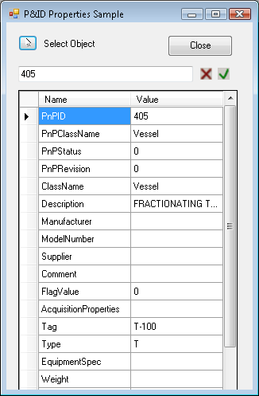

A .NET sample project using C# is installed with the SDK. The project name is PnpProp.
The sample illustrates how to use DataLinksManager to display and update Data Manager properties for a selected P&ID item.

sample .NET project
Building the project produces PnPProp.dll. Use the NETLOAD command to load the assembly, which will define the PNPPROP command.